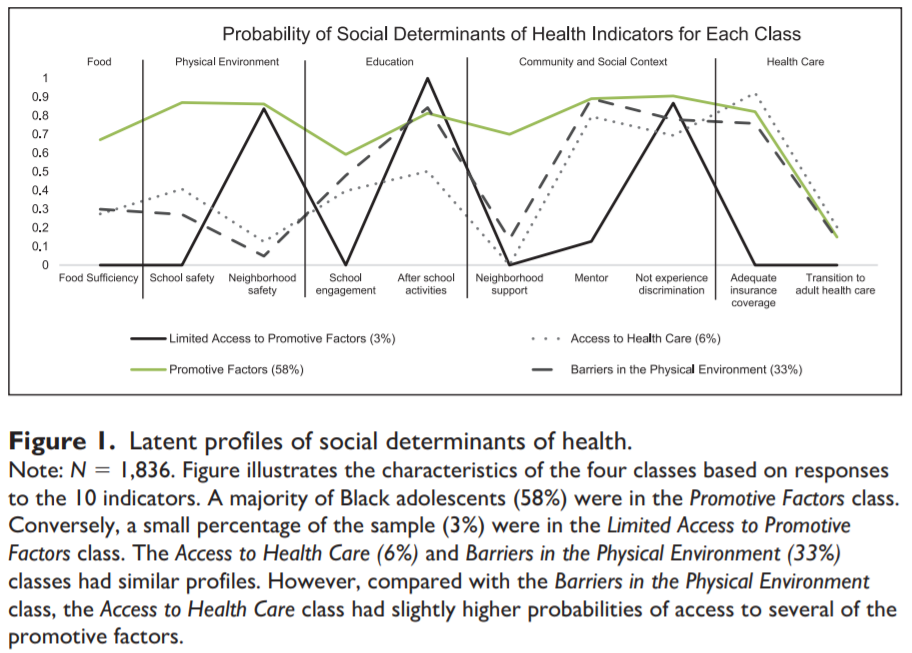
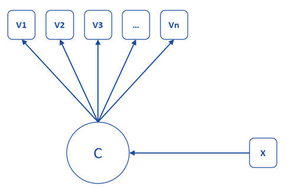
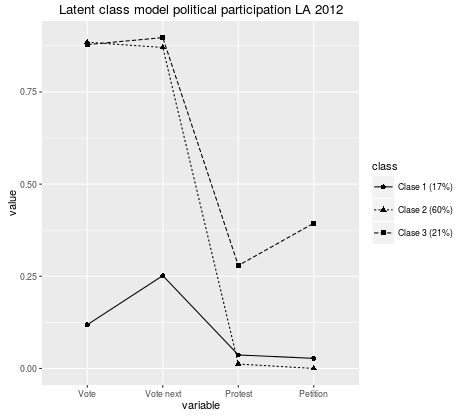
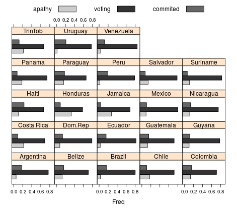
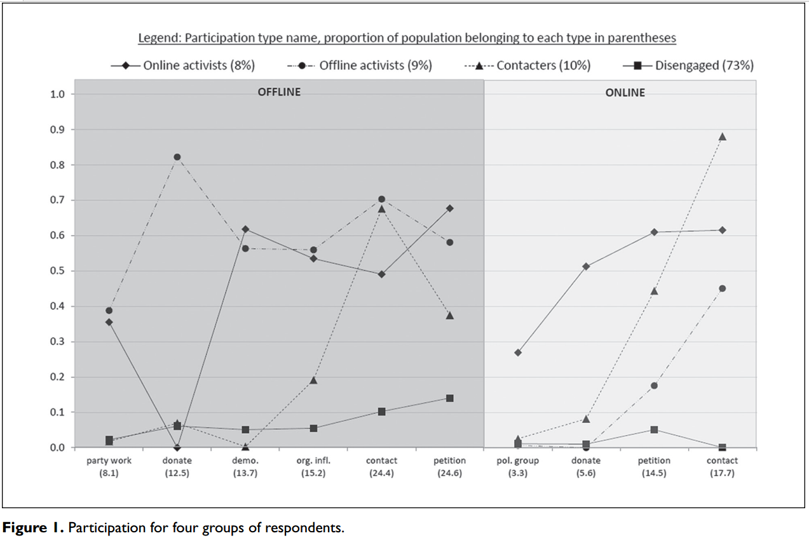
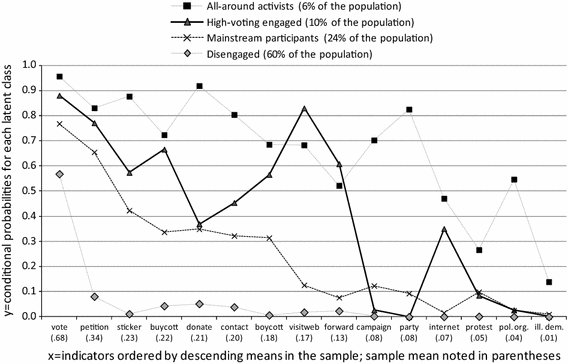
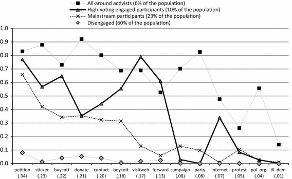
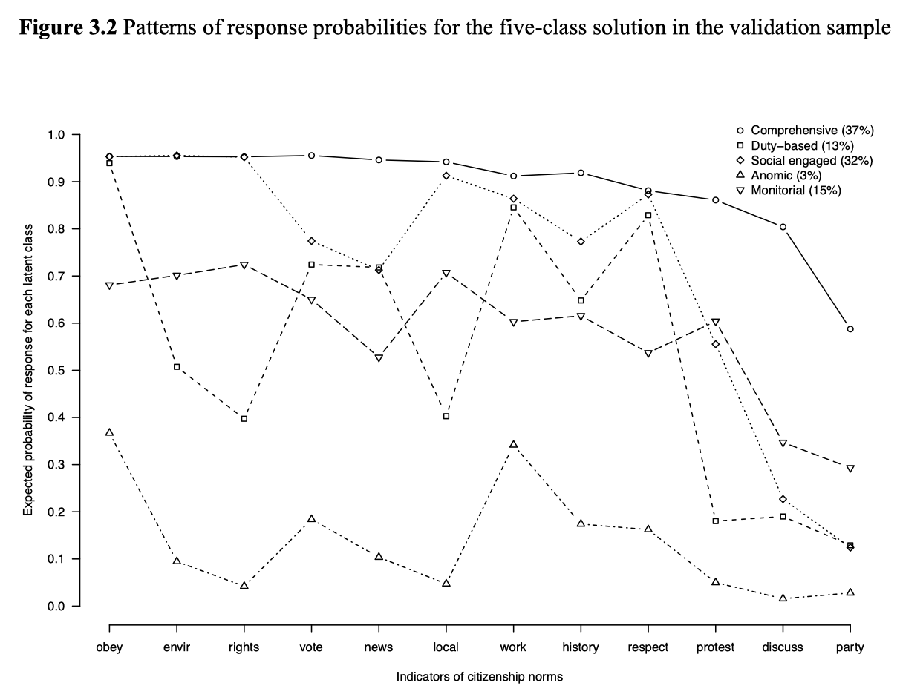
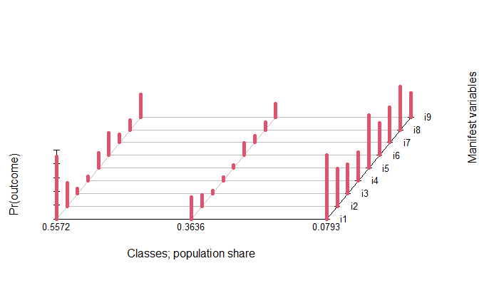

Análisis de clases latentes
Daniel Miranda
Contacto: danmiranda@uchile.cl
2025
Introducción
Introducción
- Distintos tipos de análisis según nivel de medición de variables observadas y latentes (Collins & Lanza)
Introducción

Análisis de Clases Latentes
Nociones generales
Análisis centrado en variables vs análisis centrado en individuos
El análisis de datos inferencial es generalmente análisis centrado en variables y relaciones (lineales) entre ellas
Ejemplo, si tenemos una correlación de -0.3 entre atribución interna y externa de pobreza, ¿qué significa esto?: en términos de variables y en términos de individuos.
Es la correlación / regresión la mejor forma de dar cuenta de lo que pasa con los datos ó de responder una pregunta de investigación?
Nociones generales
Familia SEM
El Análisis de Clases Latentes (LCA por Latent Class Análisis) se caracteriza por la estimación de variables latentes categóricas
El sentido de la estimación de categorías se relaciona con establecer grupos o tipologías en base a los indicadores observados, en términos de probabilidades de respuesta
Nociones generales
Principales diferencias con CFA
En CFA, el objetivo es estimar en qué medida la variable latente se relaciona con indicadores observados en una lógica lineal y en el mismo sentido para todos.
En el caso de LCA, la estimación se basa en patrones o perfiles de respuestas, por lo tanto un perfil puede incluir un alto nivel de respuesta en unos indicadores y bajo en otros.
Se puede plantear que CFA es una aproximación centrada en las variables, mientras LCA está centrada en las personas (y su clasificación)
Nociones generales
las relaciones entre los indicadores se explican por la presencia de poblaciones desconocidas a priori (la variable latente categórica)
En otras palabras, diferencias individuales en patrones de respuesta a indicadores son explicadas por la pertenencia a diferentes clases
Cada clase entonces se caracteriza por patrones de respuesta similares
Ejemplo: clases de participación política

Ejemplo: Clases de participación política

Ejemplo: Clases de participación política

Ejemplo: Clases de participación política

Ejemplo: Clases de participación política

Ejemplo: Clases de Normas Políticas

Objetivos y características
Objetivos relevantes en LCA
Determinar el número de clases mínimo necesario para explicar suficientemente las diferencias en los patrones de respuesta observados (el modelo debe ser parsimonioso), en base a la estimación de una variable latente categórica
Examinar sustativamente las clases
Contraste de hipótesis sobre estructuras tipológicas (LCA confirmatorio)
Determinar la probabilidad de pertenencia a las clases de los individuos
Analizar la relación entre pertenencia a clase y variables externas (en 1 solo paso en lógica SEM)
Introducción pasos de estimación
Análisis descriptivo de los indicadores y patrones de respuesta
Decisión tentativa de número de clases (basado en literatura / exploratorio)
Estimación de distinto número de clases, evaluar ajuste, plausibilidad teórica y técnica (sin clases muy pequeñas dadas dificultades para estimaciones posteriores)
Decisión de número de clases, justificación sustantiva
(eventualmente) Asignar sujetos a las clases respectivas según probabilidades de pertenencia de clase para análisis posteriores
Base para LCA: patrones de respuesta
La lógica a la base de este análisis es el ajuste de un modelo (parsimonioso) a la frecuencia de los patrones de respuesta empíricos
Cuantos patrones de respuesta teóricos existen en una base con 6 items dicotómicos? En el ejemplo: 2x2x2x2x2x2=101
Patrones de respuesta empíricos (ejemplo)
Pattern Freq 222222 101 212222 34 222111 31 222211 27 222122 23 222212 18 212122 16
Principales parámentros de la estimación
Probabilidades de membrecía/prevalencia de clases (unconditional probabilities), \(\gamma\): se refieren a la proporción del total de individuos que se asigna a cada clase según el modelo. Suman 1.
Probabilidad (condicional) de respuesta al ítem, \(\rho\) (rho): probabilidad de respuesta “sí” de cada variable, condicional a la pertenencia a una clase.
Es condicional porque estas probabilidades cambian según el número de clases y las probabilidades de respuesta si a otras clases.
El 0.5 indica probabilidad neutra, sobre este valor aumenta la probabilidad de pertenecer a una clase (y bajo disminuye).
Ejemplo resultados estimación


Ajuste
En general se utilizan medidas de ajuste comparativo como AIC y BIC
Se privilegia el modelo que comparativamente muestre menores valores en estos indicadores.
Se evalúa el cambio en indicadores (menor cambio)
Entropía
Tamaño de las clases
Interpretabilidad de la solución
Parsimonia
Ajuste
Entropía: es una medida de certeza en la clasificación de los sujetos en las clases
Se basa en las probabilidades de clasificación de sujetos a cada clase
Un mejor modelo haría que los sujetos fueran clasificados certeramente, es decir, alta probabilidad de pertenecer a una clase, baja en la(s) otras(s)
Valores más cercanos a 0 indican mayor certeza en la clasificación
Consideraciones relevantes

Ver: Weller, Bowen & Faubert (2020)
Ejemplo
Librerias utiles
Lectura de datos
data=rio::import("https://www.dropbox.com/scl/fi/207bs48tk25t21e213gml/lca1.txt?rlkey=292g00niipxb58w2u4buv3mgu&dl=1")
skim(data) ## Describir
lca=data[2:10] ## Seleccionar variables
dim(lca) ## Dimensiones de la base
# Recodificación necesaria para LCA (no acepta ceros)
lca[lca==1 ] <-2
lca[lca==0 ] <-1
skim(lca)Lectura de datos

Datos y variables
Estudio sobre comportamiento de consumo de alcohol (https://stats.idre.ucla.edu/sas/dae/latent-class-analysis/)
En lugar de conceptualizar el comportamiento de beber como una variable continua, lo conceptualiza como formando categorías o tipologías distintas.
Datos: encuesta a 1000 participantes que reponden acerca de 9 conductas de consumo de alcohol.
- i1. I like to drink
- i2. I drink hard liquor
- i3. I have drank in the morning
- i4. I have drank at work
- i5. I drink to get drunk
- i6. I like the taste of alcohol
- i7. I drink help me sleep
- i8. Drinking interferes with my relationships
- i9. I frequently visit bars
Datos y variables
| Statistic | N | Mean | St. Dev. | Min | Max |
| i1 | 1,000 | 1.693 | 0.461 | 1 | 2 |
| i2 | 1,000 | 1.291 | 0.454 | 1 | 2 |
| i3 | 1,000 | 1.084 | 0.278 | 1 | 2 |
| i4 | 1,000 | 1.090 | 0.286 | 1 | 2 |
| i5 | 1,000 | 1.199 | 0.399 | 1 | 2 |
| i6 | 1,000 | 1.282 | 0.450 | 1 | 2 |
| i7 | 1,000 | 1.139 | 0.346 | 1 | 2 |
| i8 | 1,000 | 1.167 | 0.373 | 1 | 2 |
| i9 | 1,000 | 1.277 | 0.448 | 1 | 2 |
| respuesta 1=no, 2=si | |||||
Posibles hipótesis:
Por ejemplo, cree que las personas se clasifican en tres tipos diferentes: abstemios, bebedores sociales y alcohólicos.
- Dado que no puede medir directamente a qué categoría pertenece alguien, esta es una variable latente (una variable que no se puede medir directamente). Sin embargo, tiene una serie de indicadores que cree que son útiles para clasificar a las personas en estas diferentes categorías.
Estimación R - modelo LCA
librería poLCA (Linzer & Lewis, 2011)
Sirve para estimar modelos básicos (medición) y también con covariables (regresión)
Precaución: funciona con recodificación donde el valor del menor nivel debe ser 1 (no acepta ceros)
Estimación R - modelo LCA
Forma típica: objeto= poLCA(f, data, nclass=N, graphs=TRUE), donde
f=vector que indica el modelo, donde para estimación “pura” 1 es la suma de probabilidades de respuesta al indicador en relacion a la pertenencia a las clases.
data= datos. Importante: que no existan categorias con 0, en caso que así sea entonces recodificar
nclass= número de clases del modelo
graphs=TRUE, genera gráfico de probabilidades condicionales por item
Estimación R - modelo LCA
Sentido de la estimación
Se estiman varios modelos con distinto número de clases
Seleccionar el modelo comparando el ajuste relativo de los diferentes y su intepretación sustantiva (interpretabilidad)
Para poder comparar un mismo modelo en distintas estimaciones se deben fijar los valores iniciales mediante la especificación de una semilla (seed, más adelante)
Ejemplos Estimación en R - modelo LCA
Estimación modelos con diferente n° de clases
## MODELO
f<-cbind(i1, i2, i3, i4, i5, i6, i7, i8, i9) ~ 1 # model
## ESTIMACIÓN
lc2=poLCA(f, lca, nclass=2, graphs = F, maxiter = 5000)
set.seed(123741) # para mantener el mismo orden de las clases
lc3=poLCA(f, lca, nclass=3, graphs = F, maxiter = 5000, tol=0.000001000)
lc4=poLCA(f, lca, nclass=4, graphs = F, maxiter = 5000, tol=0.000001000)
lc5=poLCA(f, lca, nclass=5, graphs = F, maxiter = 5000, tol=0.000001000)Estimación
Fijar orden de clases
Notas de ajuste
El ajuste de clases latentes se asocia preferentemente a comparación de indices AIC y BIC, menores valores indican mejor ajuste
Sin embargo, este proceso debe ir acompañado de interpretación sustantiva y también elementos pragmáticos (ej: no conveniencia de modelos con clases muy pequeñas)
Comparación de ajuste
fit.lc2 <- data.frame(Modell=c("Model lc2"),
BIC =lc2$bic,
AIC = lc2$aic)
fit.lc3 <- data.frame(Modell=c("Model lc3"),
BIC =lc3$bic,
AIC = lc3$aic)
fit.lc4 <- data.frame(Modell=c("Model lc4"),
BIC =lc4$bic,
AIC = lc4$aic)
fit.lc5 <- data.frame(Modell=c("Model lc5"),
BIC =lc5$bic,
AIC = lc5$aic)
comp.fit.lca=rbind(fit.lc2,fit.lc3, fit.lc4,fit.lc5)Comparación de ajuste
| Modell | BIC | AIC | |
|---|---|---|---|
| 1 | Model lc2 | 8633.66 | 8540.42 |
| 2 | Model lc3 | 8663.72 | 8521.39 |
| 3 | Model lc4 | 8704.01 | 8512.61 |
| 4 | Model lc5 | 8771.30 | 8530.82 |
Notas de ajuste
- Entropía (capacidad de clasificiación del modelo)
The quality of classification as measured by entropy has different impact in different settings. For example, you could have poor entropy and still be able to distinguish some of the classes very clearly. Or, you could use your LCA to predict a distal outcome from the latent classes and get a significant relationship that is estimated with small SE even with a low entropy. The use of “most likely class membership” as a variable for further analysis, however, is problematic when the entropy goes much lower than 0.8.
Best strategy for improving entropy is to add good indicators - indicators that discriminate well between the classes. Given a certain set of indicators, however, you would first find the model that fits the data best and then accept the entropy it gives (Beng Muthén).
Notas de ajuste
Notas de ajuste
Resultados
probabilidades condicionales
estimación tamaño de clases
ajuste
Resultados: probabilidades condicionales

Resultados: probabilidades condicionales II
Se muestran las probabilidades de respuesta si/no para cada item (ej: like) condicional a la pertenencia a cada clase
Pr(1) se refiere a la probabilidad de “no” (valor 1), mientras Pr(2) a la de “si” (valor 2) (ambas suman 1)
“Al contestar si(2) al item 1 (like), la probabilidad de pertenercer a la clase 1 es de 90,8%”
Resultados: probabilidades condicionales III

Resultados: tamaño de las clases
Estimación y predicción del tamaño de clases en un modelo de 3 clases (correlativamente para clases 1, 2 y 3)

Probabilidades de pertenencia y asignación a clase
En base al modelo es posible estimar las probabilidades de pertenencia a cada clase para cada sujeto
En base a las probabilidades, es posible asignar a cada sujeto a la clase donde tenga mayor probabilidad de pertenencia
La asignación de sujetos a clases puede utilizarse para descripciones o estimación de modelos con predictores de pertenencia a clase (ejemplo, con modelo multinomial logit)
También existe la posibildad de incluir predictores en el mismo momento de la estimación (análogo a full sem), conocido como modelos de regresión de clases latentes.
Probabilidades de pertenencia y asignación II
En R: con (sub) objetos de la estimación posterior y predclass
- posterior entrega las probabilidades de pertenencia a las clases para cada sujeto
- predclass asigna a los sujetos a las distintas clases según su mayor probabilidad.
| i1 | i2 | i3 | i4 | i5 | i6 | i7 | i8 | i9 | 1 | 2 | 3 | lc3$predclass | |
|---|---|---|---|---|---|---|---|---|---|---|---|---|---|
| 1 | 2.00 | 1.00 | 1.00 | 1.00 | 1.00 | 1.00 | 1.00 | 1.00 | 1.00 | 0.64 | 0.00 | 0.35 | 1.00 |
| 2 | 2.00 | 2.00 | 1.00 | 2.00 | 2.00 | 2.00 | 2.00 | 1.00 | 1.00 | 0.10 | 0.90 | 0.00 | 2.00 |
| 3 | 2.00 | 1.00 | 1.00 | 1.00 | 1.00 | 1.00 | 1.00 | 1.00 | 1.00 | 0.64 | 0.00 | 0.35 | 1.00 |
| 4 | 2.00 | 1.00 | 1.00 | 1.00 | 1.00 | 2.00 | 2.00 | 1.00 | 1.00 | 0.80 | 0.03 | 0.18 | 1.00 |
| 5 | 2.00 | 1.00 | 1.00 | 1.00 | 2.00 | 1.00 | 1.00 | 1.00 | 2.00 | 0.93 | 0.02 | 0.04 | 1.00 |
| 6 | 1.00 | 2.00 | 1.00 | 1.00 | 1.00 | 2.00 | 1.00 | 1.00 | 1.00 | 0.31 | 0.00 | 0.69 | 3.00 |
Variantes y aplicaciones
- LCA con covariables
- Invarianza LCA
- Latent Profile Analyses (LPA)
- LTA: latent transition analysis
Análisis de clases latentes
Daniel Miranda
Contacto: danmiranda@uchile.cl
2025